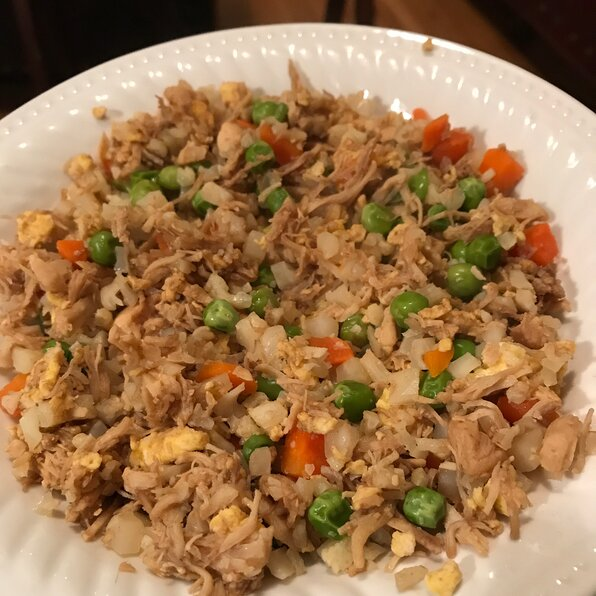

No Rice, Chicken Fried Rice
This is a low carb alternative, the chicken and cauliflower together are a healthy alternative to rice. I love chinese food and this is a tasty type of it and if you are looking for something rice like and do not want to make rice then this is perfect and can easily be adjusted for your own personal spice preferences.
Ingredients
- 6 eggs
- 1 tablespoon milk, or as needed
- 2 tablespoons vegetable oil, or as needed, divided
- 1 pound chicken breasts, cut into cubes
- 6 slices bacon, cut into small squares, or more to taste
- 1 (10 ounce) package frozen peas and carrots, thawed
- 1 head cauliflower, shredded
- 1 teaspoon soy sauce, or more to taste
Instructions
- Beat eggs and milk together in a bowl.
- Heat 1 tablespoon oil in a skillet over medium heat; cook and stir egg mixture until scrambled and cooked through, about 5 minutes. Remove skillet from heat.
- Heat 1 tablespoon oil in a wok or large, deep skillet over medium heat; cook and stir chicken until almost cooked through, 5 to 10 minutes. Add bacon; cook and stir until bacon is browned and chicken is no longer pink in the center, 5 to 10 minutes more.
- Mix peas and carrots into chicken mixture; cook and stir until warmed, about 5 minutes. Add cauliflower, scrambled eggs, and soy sauce; cook and stir until cauliflower is tender, about 10 minutes more.